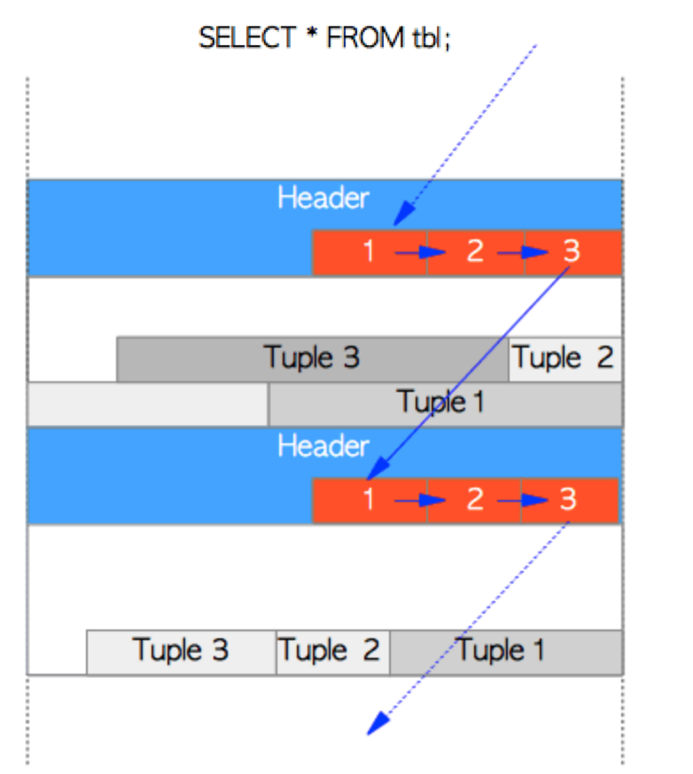
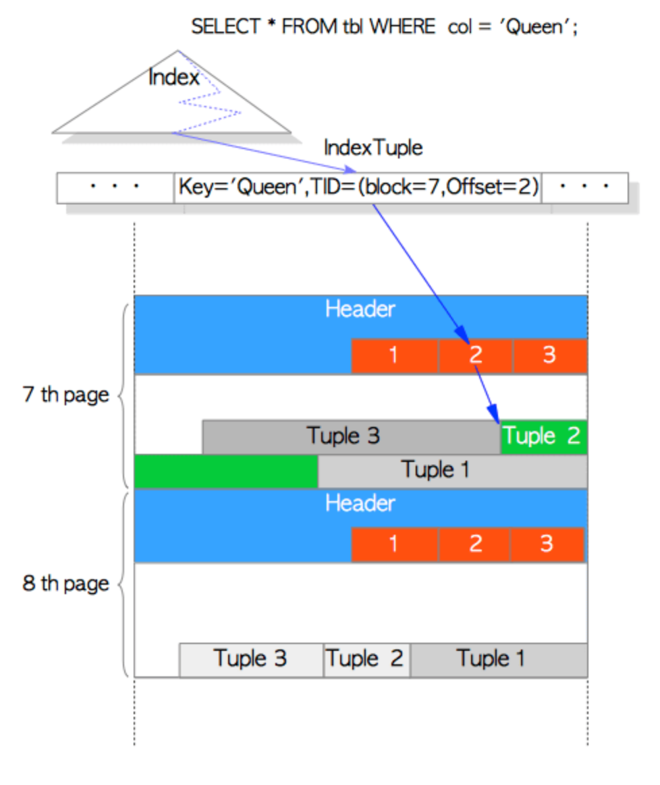
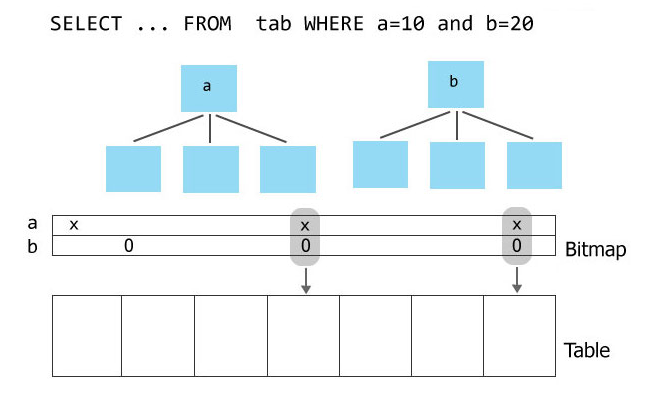
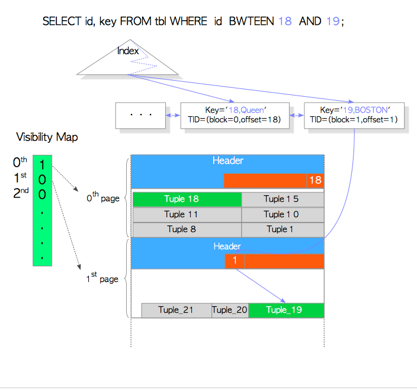
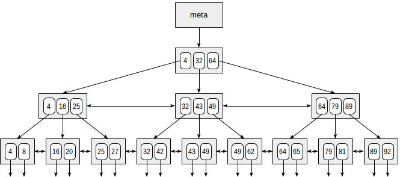
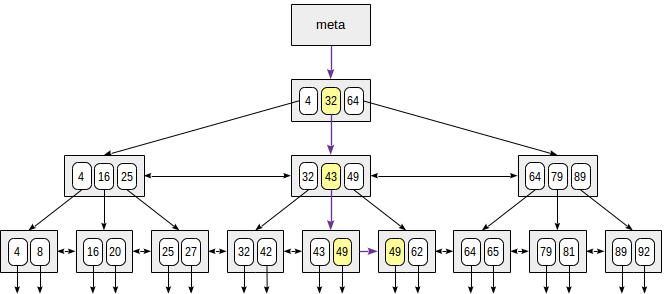
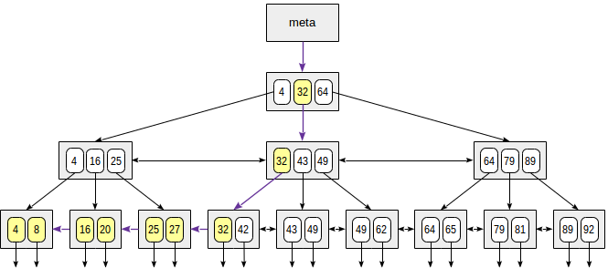

Introduction to PostgreSQL indexes
How is data stored in PostgreSQL?
How is data stored in PostgreSQL
- A table is divided into fixed length blocks
- Blocks are numbered starting from 0
- Each block contains a number of heap tuples
- A single heap tuple contains the data of a single row
- A row is identified by tuple identifier (TID)
- TID consists of (block number, offset number)
How is data stored in PostgreSQL

What is an index?
What is an index?
- Data structure
- A mapping from key to row (TID)
- Speed up data access
- Enforce integrity constraints
- Has a maintenance cost
How are they used?
How are they used?
- In queries (SELECT)
- DBs have multiple scanning techniques
- Query planner decides based on cost estimate how it is executed
- Query executor executes the plan
Scanning techniques
Scanning techniques
- Sequential scan
- Index scan
- Bitmap scan
- Index-only scan
Sequential scan

- Table is scanned block by block, row by row
- Preferred with non-selective conditions
- I/O is sequential
Index scan

- Index is searched with key to get TID
- TID is used to get row data
- Optimal when dealing with few values
- I/O is random
Bitmap scan

- More rows -> more likely to hit same block
- First return all TIDs that match the condition
- A bitmap is built from these TIDs
- Rows are read, each block is accessed only once
- I/O is sequential
Index-only scan

- Data is gotten from index
- No table I/O required
Types of indexes
Types of indexes
- B-tree
- GiST, SP-GiST
- GIN, RUM
- BRIN
B-tree

- Default index type
- Suitable for sortable data (data is stored in sorted order)
- Supports NULLs
- Order columns matter
B-tree, search by equality
key = 49
B-tree, search by inequality
key <= 35
Other index types
| GiST, SP-GiST | For non-sortable data (geodata, text documents, images) |
| GIN, RUM | For speeding up full-text search |
| BRIN | For values that correlate with their physical location in the table (e.g. time-series). Inaccurate, but much smaller index size. |
Index features
Multicolumn indexes
CREATE INDEX ON t(a, b);
-- These can use the index
SELECT * FROM t WHERE a = 100 AND b = 'john';
SELECT * FROM t WHERE a = 100;
-- This can't
SELECT * FROM t WHERE b = 'john';
Indexes on expressions
CREATE INDEX ON t(lower(b));
-- This can now use the index
SELECT * FROM t WHERE lower(b) = 'john';
Partial indexes
Can be used to reduce the index size
Useful for data with highly non-uniform distribution
-- Assume c is true for 1% of rows, and false for 99%
-- This will use sequence scan, even if there's an index
SELECT * FROM t WHERE NOT c;
-- Index size is drastically reduced with the condition
CREATE INDEX ON t(c) WHERE c = TRUE;
-- This will use the index
SELECT * FROM t WHERE c;